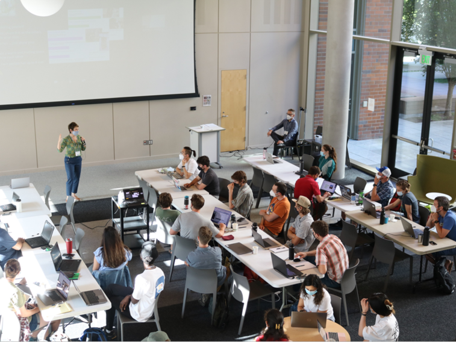
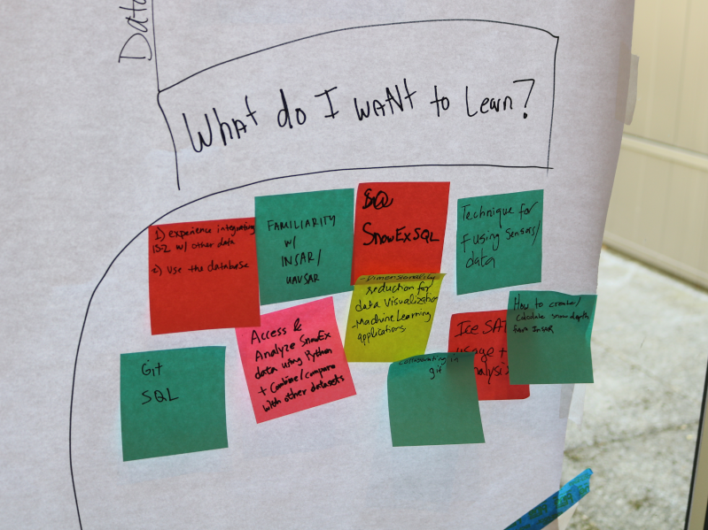

Collaboration Architect
Contents
Collaboration Architect#
The Collaboration Architect is experienced in developing community-building strategies that amplify inclusion, co-mentoring, and collaboration. They identify the barriers that inhibit engagement and contribution, and they develop structured interactions that enhance the participant’s learning experience.



Goals#
Reduce the degree of overwhelm and social anxiety that emerges when learning and practicing new skills with new people in a compressed timeframe.
Foster inclusive and generative teamwork.
Encourage and support early career participants to step out of their comfort zone to take on leading a project team.
Specific Activities#
Pre-hackweek#
Facilitate collaborative discussions about the portfolio of tutorials and their content.
Train/coach Project Coordinator and Helpers.
Hackweek#
Facilitate participant interaction.
Facilitate participants moving through the project formation phases i.e., ideation, pitching, co-shaping/scoping, and selection.
Post Hackweek#
Gather feedback, insights, and ideas from the organizing team, participant focus group, and survey responses and identify areas for improvement.